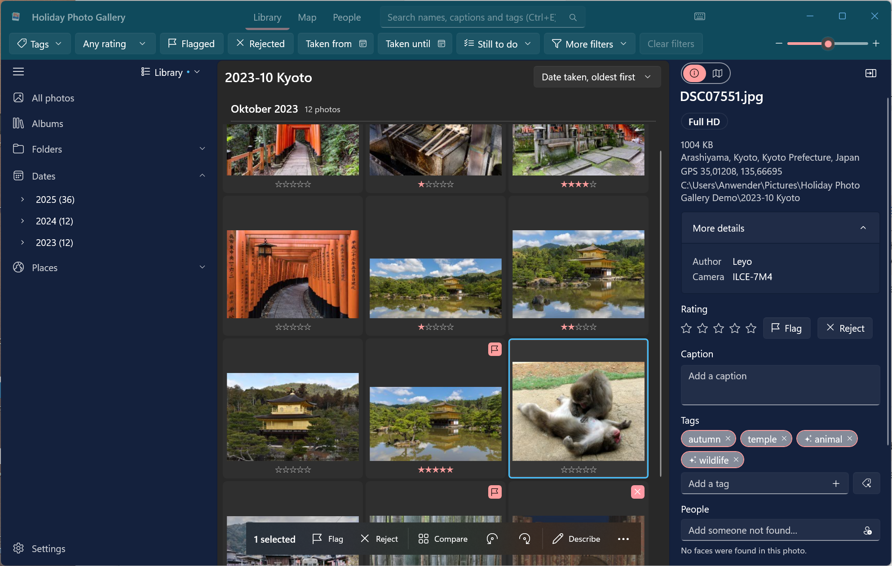
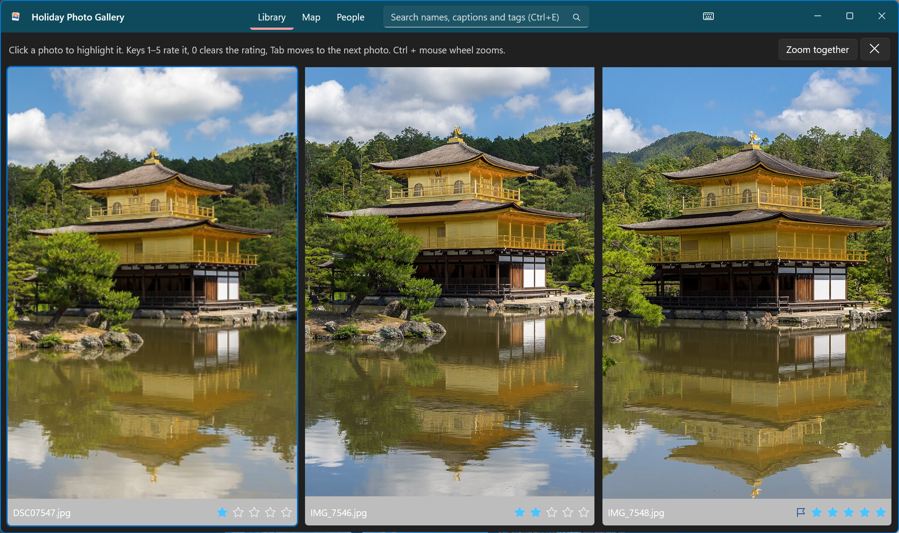
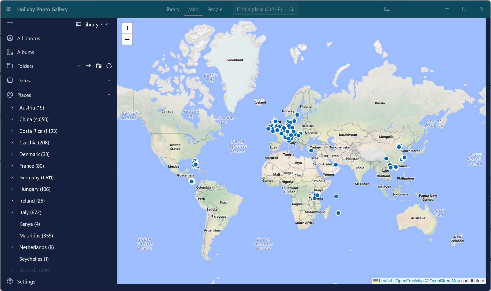
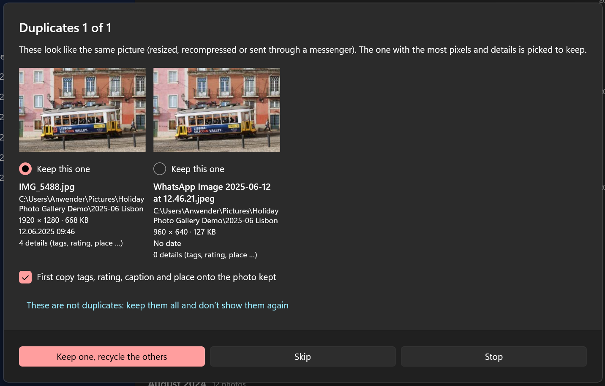
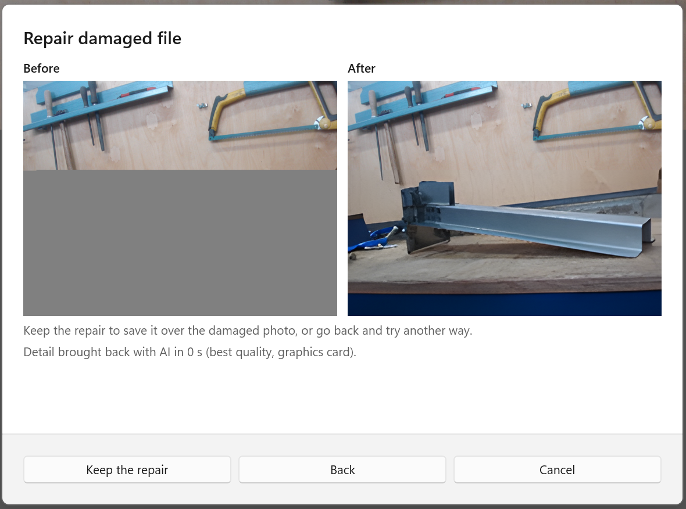

Your holiday photos, sorted.
A free photo manager for Windows in the spirit of Windows Live Photo Gallery. Browse your folders, rate and compare, tag people and places on a map, fix dates and crop. Your tags, ratings, people and places go into the files themselves, so your work is never locked into one app.
Three promises
The app is built around a few rules that do not change, whatever feature comes next.
Your files are the truth
Tags, ratings, flags, captions, people, places and dates are written into each photo (XMP, EXIF, IPTC). Copy a folder anywhere and it all comes along. The app's database is only a search cache.
Private by design
Face recognition and automatic tagging run on your own PC. No account, no tracking. Photos only leave your PC when you upload them yourself.
Every edit can be undone
Before a crop or colour fix, the original is kept in a hidden folder next to the photo. Undo the last edit, or go back to the original at any time.
A look inside
A Windows 11 app with the familiar Photo Gallery layout: folders on the left, photos in the middle, details on the right.







Everything for the work after a trip
Bring the photos in, sort hundreds of them, choose the best ones, and make sure the dates, places and names are right.
Library
- Works on your own folders, no catalogue to copy into
- Folder, Date and Place trees
- Thumbnails in their real shape, zoom with Ctrl+wheel
- Month headers and a year timeline
- Search and a filter bar for people, tags, camera, rating, flags and dates
- Drag photos onto a folder to move them, with undo
- Ctrl+K finds any command; tips on first use; Ctrl+Z undoes
Sort and rate
- Compare 1 to 4 photos side by side with shared zoom
- Rate with keys 1 to 5
- Flags (for example "to print") and a reject mark, saved in the file
- Send rejected photos to the Recycle Bin
- Lightroom keyboard shortcuts, optional auto-advance
Dates and time zones
- Edit the date taken with its time zone
- Pick one camera's photos and shift them all at once
- Or set the first photo to a known time and move the rest
- Summer time handled per photo
Map and places
- OpenStreetMap map beside the grid or full width
- Click the map to place the selected photos
- No GPS? Estimate the spot from the photos taken before and after
- Fill in country, region, city and district automatically, in your language
People
- Faces found and recognised on your PC
- Confirm suggestions, name whole groups at once
- Names saved in the standard face fields that Lightroom and digiKam read
- Imports your Windows Live Photo Gallery people
Automatic tags
- On-device tagging from your own tag list, in your language
- Written as plain tags other apps understand
- Remove all automatic tags in one go
Light editing
- Crop with print and screen ratios (1:1, 3:2, 16:9 and more)
- Auto brightness and contrast
- Rotate JPEG, HEIC, PNG, WebP, TIFF and GIF
- Original always kept; undo or revert any time
Albums and sharing
- Folder albums that travel with the folder
- Upload albums to Google Photos, uploaded photos are marked
- OneDrive albums
- Share through the Windows share dialog
- Open in your favourite editor with one click
Import and videos
- Import from a phone, camera or SD card
- Videos in the same library, with length, 4K and frame rate shown
- iPhone Live Photos marked LIVE
- Tags and ratings for MP4 and MOV in the file, other videos in a small .xmp file beside them
Tidy up and repair
- Find duplicates, also resized or messenger copies, and keep the best one
- Batch rename with a pattern, with undo
- Repair damaged photos: fill a cut-off part and bring back detail with AI
- Fix photos with the wrong file extension
- Copy and paste details from one photo to others
Private and up to date
- Mark folders or photos private; they stay hidden until you turn private mode on
- Nothing is written into the photos for that
- Updates inside the app, one click to install
Look and language
- Windows 11 design, resizable panes, gentle animations
- Light, dark or follow Windows, plus colour palettes
- English, German, Spanish, Arabic and Chinese
- Add your own language with a simple text file
Why not just use…?
Good photo tools exist. Here is what this one does differently.
| Compared with | What Holiday Photo Gallery does differently |
|---|---|
| Windows Live Photo Gallery | Discontinued in 2017. This app keeps the familiar layout and runs on Windows 11, but stores flags and people in the file instead of a database that can get lost. Your existing WLPG people tags are read straight from the photos. |
| Windows Photos | Real organising tools: tags, ratings, flags, people, captions, map geotagging and batch date shifting, all saved in the files. |
| Adobe Lightroom Classic | Free, no subscription and no catalogue to import into or back up. It works directly on your folders, with the same keyboard shortcuts and the same metadata fields. |
| Google Photos and iCloud | Your photos stay on your PC at full quality, and face and tag recognition run locally. Upload only what you choose. |
| digiKam | The same file-first approach and compatible fields, in a simpler, native Windows 11 app. |
| Geosetter and Picasa | Geotagging with place names is built into the same app you sort and tag in. Picasa has been discontinued since 2016. |
Supported formats
| Format | View | Tags, rating, people, places | Edit |
|---|---|---|---|
| JPEG | ✓ | ✓ | ✓ |
| HEIC / HEIF | ✓ | ✓ | ✓ |
| TIFF | ✓ | ✓ | ✓ |
| PNG, WebP | ✓ | ✓ | ✓ |
| GIF | ✓ | XMP only | rotate |
HEIC needs Microsoft's free HEIF Image Extensions, which most Windows 11 PCs already have.
What you need
- Windows 10 version 1809 or later, or Windows 11, 64-bit
- No admin rights needed: per-user installer or portable zip
- About 1 GB free space for the optional on-device AI models, downloaded the first time you use them
- Internet only for map tiles and place names (OpenStreetMap), the model downloads, and Google Photos or OneDrive if you link them
Download
Holiday Photo Gallery is free and open source under the Apache 2.0 licence.
Always the newest version. All releases and what changed
- Run
HolidayPhotoGallery-Setup-x64.exe. It installs for your user only, so no admin rights are needed. - If Windows warns you: the app is not code-signed yet, so SmartScreen may show "Windows protected your PC". Choose More info, then Run anyway.
- Start Holiday Photo Gallery from the Start menu.
- Add a folder with your photos. Nothing is moved or copied; the app works where your photos already are.
Prefer no installer? Unzip the portable zip anywhere and start HolidayPhotoGallery.exe.
Questions
Does the app change my photos?
Only their metadata, and only when you change something: a tag, a rating, a date or a place. The picture itself is only re-saved when you crop, auto-adjust or rotate, and then the original is kept in a hidden .originals folder next to the photo.
Will other programs see my tags and ratings?
Yes. The app writes the standard XMP, EXIF and IPTC fields plus the Microsoft fields, so Windows Explorer, Lightroom, digiKam, Windows Live Photo Gallery and most other photo tools read them.
I used Windows Live Photo Gallery for years. Can I switch?
Yes. Add your photo folders and your ratings, tags, captions and named people (the ones WLPG saved in the files) show up. Flags that WLPG kept only in its own database cannot be recovered.
Are my photos sent to the cloud for face or tag recognition?
No. Both run on your PC with open models (YuNet and SFace for faces, SigLIP 2 for tags). The models are downloaded once, the first time you use the feature.
What if I delete the app's database?
Nothing is lost. The index in %LocalAppData%\HolidayPhotoGallery is only a search cache and is rebuilt from your files.
Do I need a Google or Microsoft account?
No. Google Photos and OneDrive are optional; you only sign in if you want to upload.
Where do I report a bug or ask for a feature?
Open an issue on GitHub.